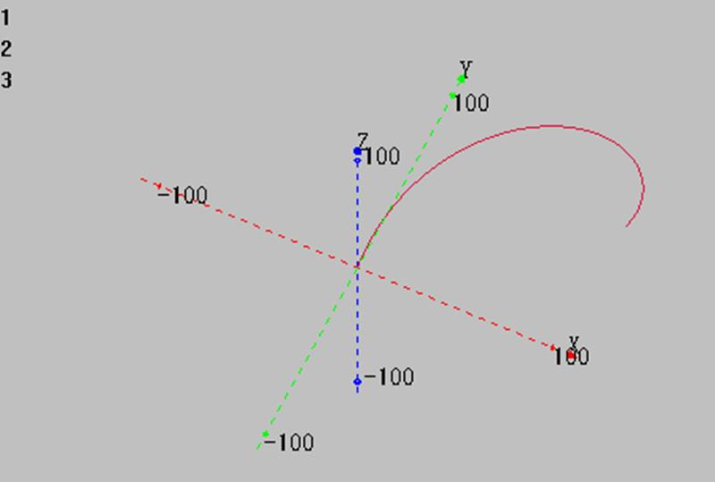
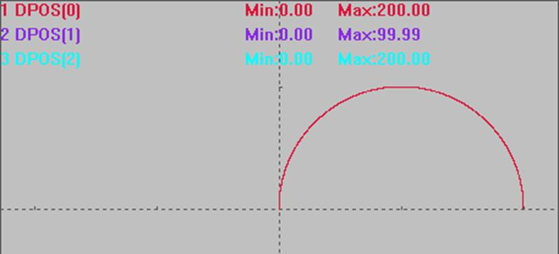

|
类型 |
多轴运动指令 | ||||||
|
描述 |
螺旋插补，三点画弧，相对运动。
BASE第一轴和第二轴进行圆弧插补，第三轴进行螺旋，相对移动方式。 自定义速度的连续插补运动可以使用SP后缀的指令，见*SP描述。 无法螺旋一圈，需要螺旋一圈请使用MHELICAL或MHELICALABS。 | ||||||
|
语法 |
MHELICAL2(mid1, mid2, end1, end2, distance3,[mode]) mid1：中间点第一个轴坐标，相对起始点距离 mid2：中间点第二个轴坐标，相对起始点距离 end1：结束点第一个轴坐标，相对起始点距离 end2：结束点第二个轴坐标，相对起始点距离 distance3：第三个轴运动距离，相对起始点距离 mode：第三轴的速度计算
坐标位置请确保正确，否则实际运动轨迹会错误。 | ||||||
|
适用控制器 |
通用 | ||||||
|
例子 |
BASE(0,1,2) ATYPE=1,1,1 '设为脉冲轴类型 UNITS=100,100,100 DPOS=0,0,0 SPEED=100,100,100 '主轴速度 ACCEL=1000 ,1000,1000 '主轴加速度 DECEL=1000 ,1000,1000 TRIGGER MHELICAL2(100,100,200,0,200) '起点原点，中间点(100,100)，终点（200,0），Z轴参与速度计算，运动200
XYZ模式下轴0轴1轴2插补轨迹  XY模式下轴0轴1插补轨迹  | ||||||
|
相关指令 |